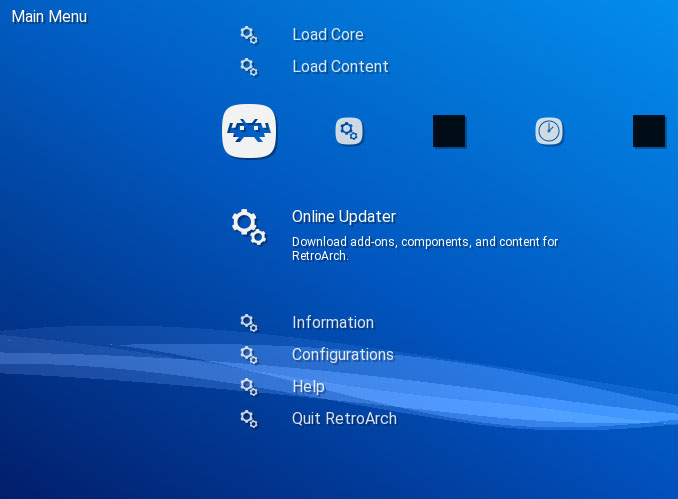
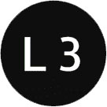

PS3 RetroArch
RetroArch es una interfaz para emuladores, motores de juegos y reproductores multimedia. Le permite ejecutar juegos clásicos en una amplia gama de computadoras y consolas a través de su elegante interfaz gráfica.

Para esta Guia
Requisitos para este tutorial
- USB en formato FAT32
Programas para este Tutorial
Archivos Para descargar
| Archivos | Servidores | |
|---|---|---|
| Retroarch | Mega | |
| WEB Oficial | retroarch.com | |
| WEB No Oficial | github.com | |
Empezando este Tutorial
- Descargamos los archivos y lo pasamos a nuestra USB en la raíz
- Para instalar el .pkg nos vamos a Administrar archivos PKG
- Seleccionamos Instalar archivos PKG/Directorio estándar (USB)
- Y instalamos uno de estos pkg de nuestra aplicación
- RetroArch 1.8.0 Official
- RetroArch No Official (Modificado para mejor funcionamiento)
- PKG con la última versión disponible
- Una vez instalada nos saldrá en el menú de Juegos
- Una vez termina la instalación
- Si queremos descargaremos el archivo roms.zip y lo descomprimiremos en la raíz de nuestro USB o HDD mas que nada para ordenar las rom
- Después conectaremos la unidad a nuestra consola y abriremos la aplicación 
- Le podemos cambiar el idioma para esto nos vamos a Setting/User/Language y buscamos el idioma de preferencia
- Para actualizar o descargar más núcleo nos vamos a Cargar núcleo y podemos (requiere internet en la consola)
- Descargar núcleo: esto es para descargar nuevos núcleos para nuestro sistema retroarch
- Instalar or Restaurar un núcleo: podemos instalar o restaurar un núcleo desde la carpeta de descargas
- Para cargar un juego debemos cargar un
- Opción 1: Podemos Cargar un Contenido para esto buscamos la rom del juego a cargar si es USB seria /dev_usb000/roms y buscamos la rom después de seleccionar la rom nos pedirá Cargar núcleo y seleccionamos y listo
- Opción 2: núcleo para esto buscamos Cargar núcleo y escogemos el sistema a cargar y después buscamos la rom del juego a cargar y listo
- Para cambiar de juego presionamos  + y seleccionamos cerrar
- Y estaríamos listo
×